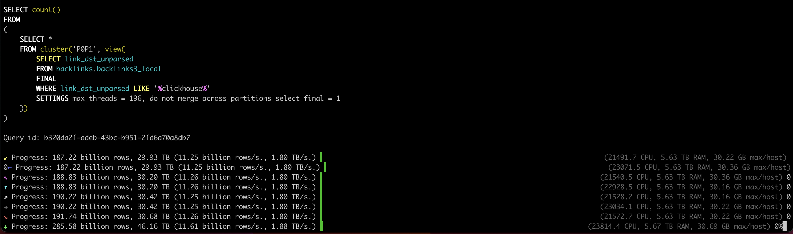

1. (50 min) What's new in ClickHouse 24.1.
2. (10 min) Q&A.
ClickHouse Winter Release.
— 26 new features ☃️
— 22 performance optimizations ⛷️
— 47 bug fixes 🧊
punycodeEncode, punycodeDecode, idnaEncode, idnaDecode
:) SELECT punycodeEncode('ClickHouse是一个很好的数据库')
ClickHouse-zf2pypw92j24o7ldjpvw6hdrd236i
:) SELECT idnaEncode('ClickHouse.是一个不错的.数据库')
clickhouse.xn--4gq0a0fy48indsd45b.xn--dxty1ibyb
:) SELECT idnaDecode('clickhouse.xn--4gq0a0fy48indsd45b.xn--dxty1ibyb')
clickhouse.是一个不错的.数据库
Developer: Robert Schulze.
Bonus:
— what are the most popular IDN on the internet?
Developer: Robert Schulze.
:) SELECT
'ClickHouse is a good database' AS phrase,
tokens(phrase) AS tok,
arrayShingles(tok, 3) AS shingles
Row 1:
──────
phrase: ClickHouse is a good database
tok: ['ClickHouse','is','a','good','database']
shingles: [['ClickHouse','is','a'],['is','a','good'],['a','good','database']]
Demo
Developer: Zheng Miao.
quantileDD, quantilesDD, medianDD
:) SELECT quantileExact(c), quantileDD(0.0001)(c), quantile(c),
quantileBFloat16(c), quantileTiming(c), quantileTDigest(c)
FROM (
SELECT created_at::Date, count() AS c FROM github_events
WHERE repo_name = 'ClickHouse/ClickHouse'
AND event_type = 'PullRequestEvent' AND action = 'opened'
GROUP BY ALL)
──────
quantileExact(c): 19
quantileDD(0.0001)(c): 19.001159522718307
quantile(c): 19
quantileBFloat16(c): 19
quantileTiming(c): 19
quantileTDigest(c): 18.804445
Developers: Srikanth Chekuri.
quantileDD, quantilesDD, medianDD
Is it fast?
Demo
Developers: Srikanth Chekuri.
levenshteinDistance, damerauLevenshteinDistance,
jaroSimilarity, jaroWinklerSimilarity
:) SELECT word,
levenshteinDistance(word, 'clickhouse') AS d1,
damerauLevenshteinDistance(word, 'clickhouse') AS d2,
jaroSimilarity(word, 'clickhouse') AS d3,
jaroWinklerSimilarity(word, 'clickhouse') AS d4
FROM (
SELECT DISTINCT arrayJoin(tokens(lower(title))) AS word
FROM hackernews)
ORDER BY d1 ASC LIMIT 50
Demo.
Developer: Robert Schulze.
on data export:
:) SELECT text FROM hackernews INTO OUTFILE 'text.tsv.zst'
SETTINGS output_format_compression_level = 6;
:) SELECT text FROM hackernews INTO OUTFILE 'text.tsv.zst'
SETTINGS output_format_compression_level = 6,
output_format_compression_zstd_window_log = 26;
Works for local files, S3, HDFS, etc.
Demo
Developer: Duc Canh Le.
A new setting input_format_json_read_bools_as_strings, enabled by default.
:) SELECT * FROM format(JSON, '{"x": "Hello"}, {"x": false}')
┌─x─────┐
│ Hello │
│ false │
└───────┘
:) SET compatibility = '23.12'
:) SELECT * FROM format(JSON, '{"x": "Hello"}, {"x": false}')
Exception: Automatically defined type Bool for column 'x' in row 1
differs from type defined by previous rows: String.
Developer: Pavel Kruglov.
SET distributed_ddl_output_mode = 'throw_only_active';
SET distributed_ddl_output_mode = 'null_status_on_timeout_only_active';
Was:
Exception: Watching task /clickhouse/task_queue/ddl/query-0000151542
is executing longer than distributed_ddl_task_timeout (=180) seconds.
There are 1 unfinished hosts (0 of them are currently active),
they are going to execute the query in background.
Now:
It does not wait for inactive replicas.
Developer: Alexander Tokmakov.
curl http://localhost:8123/ -d '
SELECT number FROM system.numbers_mt LIMIT 1000000000 FORMAT JSON
' > /dev/null
Was: 28 sec, 1.0 GB/sec.
Now: 9.6 sec, 3.4 GB/sec.
Bonus: the speed up is just a side-effect of adding a feature:
separate metrics of network traffic for each server interface
— InterfaceHTTPSendBytes;
— InterfaceHTTPReceiveBytes;
— InterfaceNativeSendBytes;
— ...
Developer: Yakov Olkhovskiy.
SET allow_experimental_parallel_reading_from_replicas = 1,
max_parallel_replicas = 123;
Better cache locality:
— it reads the same ranges from the same replicas if they are available.
Better tail latency:
— faster replicas will steal tasks from slow ones.
Example from a cluster with 100 pods, 30 CPU cores each:
Processed 38.23 billion rows, 570.69 GB
(24.51 billion rows/s., 365.90 GB/s.)
Developer: Nikita Taranov.
Aim higher:
SELECT uniqExact(WatchID) FROM remote('127.0.0.{1,2}', default.hits);
23.12: 16.524 sec
24.1: 4.545 sec.
Developer: Nikita Taranov.
Lowered memory consumption for the horizontal merge algorithm
(such as merge of tables with per-column TTL expressions):
— on a table with 30 columns and 100 parts,
the difference is 4.5 GiB vs 9.1 GiB!
Lowered memory consumption for the vertical merge algorithm
(by lowering the block size in the presence of heavy values):
— on a table with Array(String), 1000-element arrays of 50 bytes,
the difference is 90 MiB vs 4.57 GiB!
Developer: Anton Popov.
Reduced memory consumption at starup.
Reduced memory consumption at runtime by 20..30%
by better packing of znodes in memory.
Developer: Antonio Andelic.
SYSTEM JEMALLOC PURGE
A command to free the memory cached by the allocator,
with the expense of performance.
Available for clickhouse-server, and for Keeper under four-letter commands.
Developer: Antonio Andelic.
FINAL - apply the merge logic on the fly on SELECT query.
Applicable for Replacing-, Collapsing-, Aggregating-, Summing-,
and other MergeTree tables.
Allows to get the behavior of unique primary key, as well as UPSERT, REPLACE, INSERT IGNORE as in OLTP databases.
Can be specified explicitly in a query:
SELECT ... FROM table FINAL
or with a setting: SET final = 1
A downside: SELECT becomes slower.
Vertical algorithm for ReplacingMergeTree.
Similar to the vertical algorithm for background merges
— gives better cache locality.
Example from a production query at Ahrefs:
23.12: 8.7 sec
24.1: 3.2 sec.
Developer: Duc Canh Le.
A new data type that can store values of different types.
Example: Variant(UInt64, String, Array(UInt64))
:) CREATE TABLE test (v Variant(UInt64, String, Array(UInt64))) ENGINE = Memory;
:) INSERT INTO test VALUES (NULL), (42), ('Hello, World!'), ([1, 2, 3]);
:) SELECT v FROM test;
┌─v─────────────┐
│ ᴺᵁᴸᴸ │
│ 42 │
│ Hello, World! │
│ [1,2,3] │
└───────────────┘
Developer: Pavel Kruglov.
Allows creating Arrays, Maps of incompatible types,
or combining these types in a conditional expression:
:) SET allow_experimental_variant_type = 1, use_variant_as_common_type = 1;
:) SELECT number % 2 ? 'Hello' : 123 AS x, toTypeName(x) AS t FROM numbers(3)
┌─x─────┬─t──────────────────────┐
│ 123 │ Variant(String, UInt8) │
│ Hello │ Variant(String, UInt8) │
│ 123 │ Variant(String, UInt8) │
└───────┴────────────────────────┘
:) SELECT map('Hello', 1, 'World', [2, 3]) AS x, toTypeName(x) AS t
┌─x─────────────────────────┬─t─────────────────────────────────────────┐
│ {'Hello':1,'World':[2,3]} │ Map(String, Variant(Array(UInt8), UInt8)) │
└───────────────────────────┴───────────────────────────────────────────┘
Developer: Pavel Kruglov.
Reading with explicit cast or subcolumns:
:) CREATE TEMPORARY TABLE test (x Variant(UInt64, String, Array(String)));
:) INSERT INTO test VALUES (123), ('Hello'), (['World', 'Googbye']);
:) SELECT x FROM test;
┌─x───────────────────┐
│ 123 │
│ Hello │
│ ['World','Googbye'] │
└─────────────────────┘
:) SELECT x::String FROM test; │ :) SELECT x.String FROM test;
│
┌─x───────────────────┐ │ ┌─x.String─┐
│ 123 │ │ │ ᴺᵁᴸᴸ │
│ Hello │ │ │ Hello │
│ ['World','Googbye'] │ │ │ ᴺᵁᴸᴸ │
└─────────────────────┘ │ └──────────┘
Import from all supported semistructured formats (CSV, TSV, JSON, etc):
:) SELECT v, variantElement(v, 'String') AS str,
variantElement(v, 'UInt64') AS num, variantElement(v, 'Float64') AS float,
variantElement(v, 'DateTime') AS date, variantElement(v, 'Array(UInt64)') AS arr
FROM format(JSONEachRow, 'v Variant(String, UInt64, Float64, DateTime, Array(UInt64))',
$$ {"v" : "Hello, World!"}, {"v" : 42}, {"v" : 42.42},
{"v" : "2020-01-01 00:00:00"}, {"v" : [1, 2, 3]} $$)
┌─v───────────────────┬─str───────────┬──num─┬─float─┬────────────────date─┬─arr─────┐
│ Hello, World! │ Hello, World! │ ᴺᵁᴸᴸ │ ᴺᵁᴸᴸ │ ᴺᵁᴸᴸ │ [] │
│ 42 │ ᴺᵁᴸᴸ │ 42 │ ᴺᵁᴸᴸ │ ᴺᵁᴸᴸ │ [] │
│ 42.42 │ ᴺᵁᴸᴸ │ ᴺᵁᴸᴸ │ 42.42 │ ᴺᵁᴸᴸ │ [] │
│ 2020-01-01 00:00:00 │ ᴺᵁᴸᴸ │ ᴺᵁᴸᴸ │ ᴺᵁᴸᴸ │ 2020-01-01 00:00:00 │ [] │
│ [1,2,3] │ ᴺᵁᴸᴸ │ ᴺᵁᴸᴸ │ ᴺᵁᴸᴸ │ ᴺᵁᴸᴸ │ [1,2,3] │
└─────────────────────┴───────────────┴──────┴───────┴─────────────────────┴─────────┘
Composable configurations of virtual filesystems
on top of object storages and metadata storages.
storage_configuration:
disks:
my_disk:
type: s3
type: object_storage
object_storage_type: s3
metadata_storage_type: local
path: 's3_disk/'
endpoint: 'https://mybucket.s3.amazonaws.com/test/'
Developer: Kseniia Sumarokova.
All types of object storages:
— s3;
— web;
— hdfs;
— azure_blob_storage;
— local_blob_storage;
Can be combined with all types of metadata:
— local;
— web;
— plain;
Developer: Kseniia Sumarokova.
Grafana plugin v4-beta
ClickPipes:
— support for Azure Event Hub, Redpanda, Warpstream, Upstash;
— configurable authentication;
Updates for PowerBI, Metabase, Java client, Kafka Connector, JavaScript client.
— ClickHouse for Feature Stores;
— Cracking "One billion row challenge";
— Alexey's interview for CSDN;
Video Recordings: https://www.youtube.com/c/ClickHouseDB